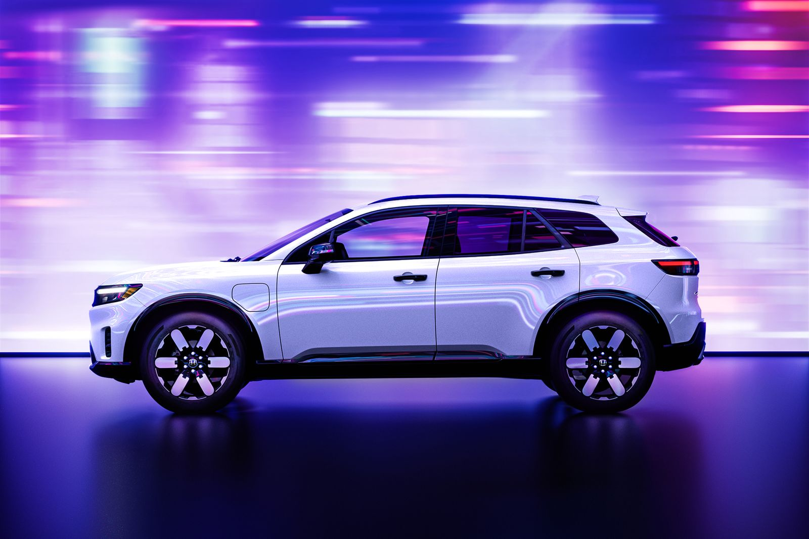
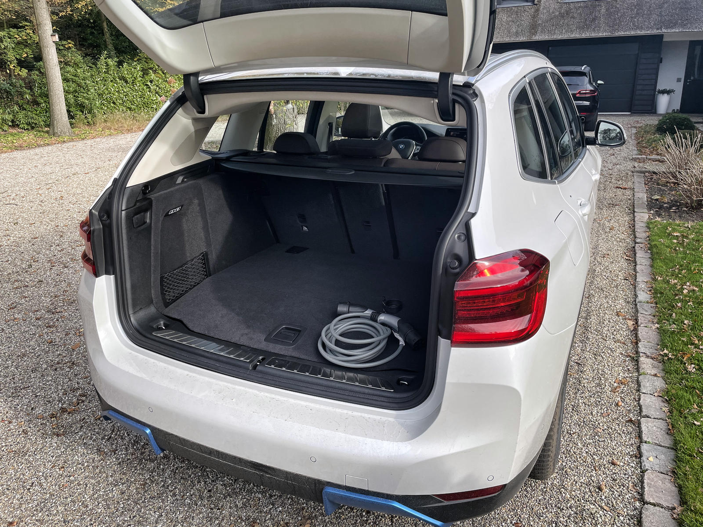
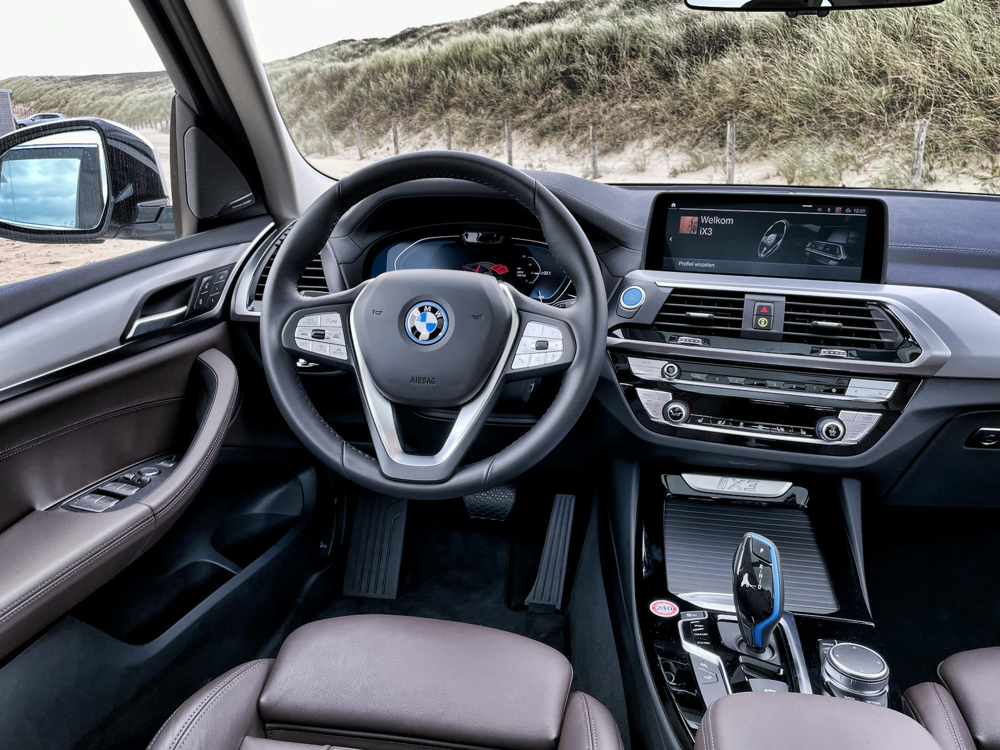
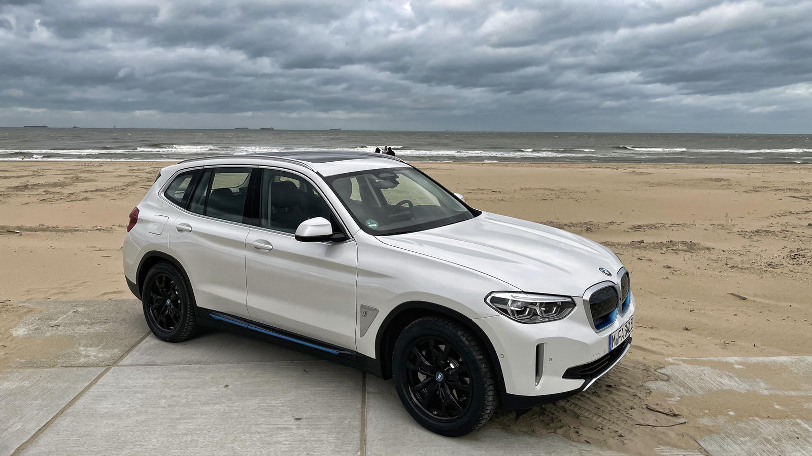

Wat is de ideale gezinswagen voor in de stad?
De overstap naar elektrisch rijden stond bij ons al even op de planning. Met twee jonge kinderen, dagelijkse ritjes naar school, sportclub en werk. Was het tijd om onze oude benzinewagen in te ruilen, maar welke elektrische gezinswagen past bij een gezin in de stad? We deden de testrit met de e-Taly een compacte volledig elektrische wagen met een rijbereik van 380 km.
Hoe krijg ik hier alles in?
Toen ik de e-Taly voor het eerst zag dacht ik “Ziet er leuk uit, maar is dit niet wat klein voor een gezin?” Dat idee veranderde snel. De binnenruimte is goed benut. De koffer is verrassend diep. Hij slikte vlot een buggy, rugzakken en een boodschappentas. De kinderen vonden hun plek achterin prima, en zelfs met twee kinderzitjes bleef er genoeg ruimte over om nog tussenin te kruipen.
De stoelen zitten comfortabel, de bediening is zeer vlot. Geen overdaad aan knoppen, gewoon een overzichtelijk touchscreen en een digitale snelheidsmeter. Binnen vijf minuten voelde het alsof ik nooit een andere wagen had.
Rijden zonder gebrom.
De eerste meters waren vreemd stil. Geen gebrom, geen trillingen gewoon zacht zoemen. Dat went gelukkig snel. In de stad is dat comfort echt een pluspunt. Je trekt vlot op aan het verkeerslicht, je manoeuvreert makkelijk in smalle straatjes en parkeren verloopt zonder stress dankzij de achteruitrijcamera en sensoren.
Wat me vooral opviel was het gevoel van controle. De elektromotor reageert meteen op het gaspedaal. Geen vertraging, geen geklooi met schakelen. Gewoon gas geven en gaan.
Kan je er mee op vakantie?
We deden ook een langere rit van Geel naar de kust met twee kinderen op de achterbank strandspullen in de koffer en Spotify op. De e-Taly hield zich moeiteloos staande op de snelweg. Het is geen racewagen, maar vlot genoeg om zonder frustratie in te halen. Met cruisecontrol aan reed ik ontspannen en de auto hield netjes het midden van de rijstrook aan handig voor als je concentratie even verslapt.😉
Na 240 kilometer hadden we nog ruim 100 km bereik over. Geen laadstress dus, zelfs niet met volle belading en airco aan.
Zou ik hem aanraden?
Is het de perfecte gezinswagen? Nee. De afwerking is eerder basic, en met drie kinderen wordt het krap. Maar voor een gezin zoals het onze twee kids, veel korte ritten en af en toe een weekend weg is dit een slimme keuze. Hij is praktisch, stil, zuinig en je vertrekt elke ochtend met een volle batterij.
Niet de snelste, niet de goedkoopste, maar wel eentje die doet wat hij moet doen. Zonder gedoe. Precies dat maakt hem zo overtuigend.
Laat een reactie achter.